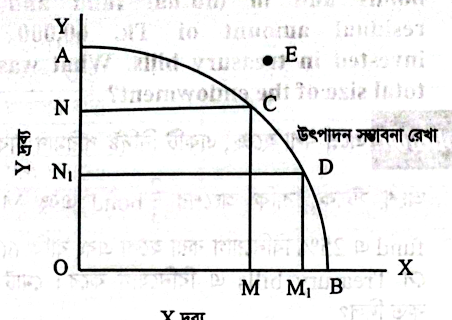
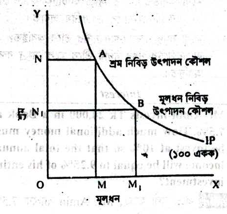
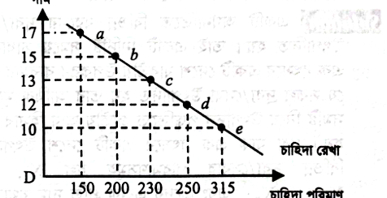

e) টুপি পরানো (তোষামোদ করা / ধোঁকা দেওয়া): মিষ্টি কথায় টুপি পরিয়ে লোকটা তোমার কাছ থেকে টাকা খসিয়ে নিল।
প্রশ্ন ২বাংলাবাংলা ব্যাকরণনম্বর: ৫
নিচের শব্দগুলোর শুদ্ধ বানান লিখুন: a) বন্দোপাধ্যায় b) বিভীষীকা c) শ্রদ্ধাঞ্জলী d) স্নেহাশীষ e) ক্ষীনজীবী
স্ব-মূল্যায়ন (Self-Evaluation):
শুদ্ধ বানান:
a) বন্দোপাধ্যায় → বন্দ্যোপাধ্যায় (য-ফলা যুক্ত)
b) বিভীষীকা → বিভীষিকা (হ্রস্ব ই-কার)
c) শ্রদ্ধাঞ্জলী → শ্রদ্ধাঞ্জলি (অঞ্জলি যুক্ত শব্দে হ্রস্ব ই)
d) স্নেহাশীষ → স্নেহাশিস (তালব্য শ ও হ্রস্ব ই)
e) ক্ষীনজীবী → ক্ষীণজীবী (দীর্ঘ ঈ-কার)
প্রশ্ন ৩ইংরেজিEnglish Grammarনম্বর: ৫
Write down the plural form of the following words: a) Dormouse b) Louse c) Alumnus d) Apex e) Basis
স্ব-মূল্যায়ন (Self-Evaluation):
Plural Forms:
a) Dormouse → Dormice
b) Louse → Lice
c) Alumnus → Alumni
d) Apex → Apexes / Apices
e) Basis → Bases
প্রশ্ন ৪ইংরেজিEnglish Grammarনম্বর: ৫
Fill in the gaps with appropriate word / preposition: a) Roni requested Kabir ___ telephone to attend the meeting. b) New programs will be ___ next week in Bangladesh Television. c) I cannot ___ to pay such high prices. d) There is no alternative ___ training. e) Hurry up! We have to go ___ five minutes.
স্ব-মূল্যায়ন (Self-Evaluation):
Appropriate Words & Prepositions:
a) Roni requested Kabir by / on telephone to attend the meeting. (Note: যোগাযোগের মাধ্যমে 'by telephone' বা 'on the phone')।
b) New programs will be telecast / broadcast next week in Bangladesh Television. (Note: telecast-এর past participle রূপ অপরিবর্তিত থাকে)।
c) I cannot afford to pay such high prices. (সামর্থ্য থাকা অর্থে 'afford')।
d) There is no alternative to training. (বিকল্প অর্থে 'alternative to')।
e) Hurry up! We have to go in / within five minutes. (নির্দিষ্ট সময়ের মধ্যে অর্থে 'in')।
প্রশ্ন ৫সাধারণ জ্ঞানসাধারণ জ্ঞাননম্বর: ১০
নিচের প্রশ্নগুলোর সংক্ষেপে উত্তর দিন: a) মুক্তিযুদ্ধ চলাকালীন নৌবাহিনী কর্তৃক পাক বাহিনীর বিরুদ্ধে পরিচালিত অপারেশনের কোড নাম কী ছিল? b) ইউরোপীয় ইউনিয়নের অভিন্ন মুদ্রা ইউরো কত তারিখে চালু হয়? ইউরো মুদ্রার জনক কে? c) সার্ক সচিবালয় কোথায় অবস্থিত? d) বাংলাদেশের ২০২৩-২৪ অর্থ বছরের ঘোষিত মোট বাজেট কত ছিল? e) ভারতের ইতিহাসে প্রথম আদিবাসী রাষ্ট্রপতির নাম কী? f) বাংলাদেশ স্যাটেলাইট-১ এর মূল ভূ-কেন্দ্র স্টেশনটি কোথায় অবস্থিত? g) ECNEC এর পূর্ণরূপ কী? এর প্রধান কে? h) বাংলাদেশের প্রথম ভৌগোলিক নির্দেশক (GI) পণ্য কোনটি? i) ১৪-০৭-২৩ তারিখে বাংলাদেশ ও আফগানিস্তানের মধ্যকার টি-২০ ম্যাচে হ্যাটট্রিক করেন কে? j) মোংলা সমুদ্র বন্দর কোন নদীর তীরে অবস্থিত?
স্ব-মূল্যায়ন (Self-Evaluation):
সাধারণ জ্ঞানের উত্তরমালা:
a) অপারেশন জ্যাকপট (Operation Jackpot): ১৯৭১ সালের ১৫ আগস্ট মুক্তিযুদ্ধ চলাকালীন নৌ-কমান্ডোদের পরিচালিত দুঃসাহসিক যুগপৎ আক্রমণ।
b) ইউরো চালু: ১ জানুয়ারি ১৯৯৯ (মুদ্রা হিসেবে চালু ২০০২)। জনক: কানাডীয় নোবেলজয়ী অর্থনীতিবিদ রবার্ট মান্ডেল (Robert Mundell)।
c) সার্ক সচিবালয়: নেপালের রাজধানী কাঠমান্ডু-তে অবস্থিত।
d) বাজেট ২০২৩-২৪: মোট ৭,৬১,৭৮৫ কোটি টাকা।
e) ভারতের প্রথম আদিবাসী রাষ্ট্রপতি:দ্রৌপদী মুর্মু (Droupadi Murmu)—ভারতের ১৫তম রাষ্ট্রপতি (সাঁওতাল সম্প্রদায়)।
f) স্যাটেলাইট-১ ভূ-কেন্দ্র: মূল ভূ-কেন্দ্র গাজীপুরের শ্রীপুর উপজেলার তেলিপাড়ায় (সজীব ওয়াজেদ উপগ্রহ ভূ-কেন্দ্র); দ্বিতীয় বিকল্প কেন্দ্র রাঙামাটির বেতবুনিয়ায়।
g) ECNEC: Executive Committee of the National Economic Council (জাতীয় অর্থনৈতিক পরিষদের নির্বাহী কমিটি)। এর সভাপতি বা প্রধান হলেন মাননীয় প্রধানমন্ত্রী।
h) প্রথম GI পণ্য:জামদানি শাড়ি (২০১৫ সালে নিবন্ধিত, ২০১৬ সালের ১৭ নভেম্বর সনদপ্রাপ্ত)।
j) মোংলা বন্দর: বাগেরহাট জেলার পশুর নদীর তীরে অবস্থিত।
প্রশ্ন ৬গণিতগণিতনম্বর: ৫
Mr. Amin invests Tk 24,000 in a Bank at 7.5%. How much additional money must he invest at 10% so that the total annual income will be equal to 9.25% of his entire investment?
স্ব-মূল্যায়ন (Self-Evaluation):
Mathematical Solution:
Let the additional money invested at 10% be Tk. \(x\).
Then the total investment becomes Tk. \((24,000 + x)\).
According to the question, \(\left(24,000 \times \frac{7.5}{100}\right) + \left(x \times \frac{10}{100}\right) = (24,000 + x) \times \frac{9.25}{100}\)
Answer: Additional investment required is Tk. 56,000.
প্রশ্ন ৭গণিতগণিতনম্বর: ৫
If one-third of the fund of an endowment was invested in stocks and of the other two-thirds, 25% each was invested in bonds and in mutual fund and the residual amount of Tk. 60,000 was invested in treasury bills. What was the total size of the endowment?
স্ব-মূল্যায়ন (Self-Evaluation):
Mathematical Solution:
Let the total fund of the endowment be \(T\).
Invested in stocks = \(\frac{1}{3}T\)
Remaining fund = \(T - \frac{1}{3}T = \frac{2}{3}T\)
Invested in bonds = \(25\%\) of \(\frac{2}{3}T = \frac{1}{4} \times \frac{2}{3}T = \frac{1}{6}T\)
Invested in mutual fund = \(25\%\) of \(\frac{2}{3}T = \frac{1}{4} \times \frac{2}{3}T = \frac{1}{6}T\)
Total invested in stocks, bonds & mutual funds = \(\frac{1}{3}T + \frac{1}{6}T + \frac{1}{6}T = \frac{2+1+1}{6}T = \frac{4}{6}T = \frac{2}{3}T\).
Residual amount invested in treasury bills: \(\text{Residual} = T - \frac{2}{3}T = \frac{1}{3}T\)
According to the problem, \(\frac{1}{3}T = 60,000\) \(T = 60,000 \times 3 = 1,80,000\)
Answer: The total size of the endowment was Tk. 1,80,000.
প্রশ্ন ৮অর্থনীতিঅর্থনীতিনম্বর: ৫
মৌলিক অর্থনৈতিক সমস্যাগুলো কী কী? রেখাচিত্রের সাহায্যে ব্যাখ্যা করুন।
স্ব-মূল্যায়ন (Self-Evaluation):
মৌলিক অর্থনৈতিক সমস্যা: সম্পদের দুষ্প্রাপ্যতা (Scarcity) এবং অসীম অভাবের প্রেক্ষাপটে সমাজে নির্বাচন বা বাছাইজনিত তিনটি মৌলিক সমস্যার উদ্ভব ঘটে। নোবেলজয়ী অর্থনীতিবিদ পল স্যামুয়েলসন (Paul A. Samuelson) এই তিনটি মৌলিক সমস্যা চিহ্নিত করেছেন:
কী উৎপাদন করা হবে এবং কী পরিমাণে উৎপাদন করা হবে (What to produce): সমাজের সীমিত সম্পদ দিয়ে খাদ্য, বস্ত্র নাকি অস্ত্রশস্ত্র উৎপাদন হবে তা নির্ধারণ। এটি উৎপাদন সম্ভাবনা রেখা (PPC) দ্বারা নির্দেশিত হয়।
কীভাবে উৎপাদন করা হবে (How to produce): শ্রম নিবিড় (Labor intensive) নাকি মূলধন নিবিড় (Capital intensive) প্রযুক্তি ব্যবহার করা হবে তা সম-উৎপাদন রেখা (Isoproduct Curve) দিয়ে নির্ধারণ করা হয়।
কার জন্য উৎপাদন করা হবে (For whom to produce): উৎপাদিত জাতীয় আয় সমাজের বিভিন্ন শ্রেণি (ধনিক ও দরিদ্র) ও উপকরণের মধ্যে কীভাবে বণ্টিত হবে তা নির্ধারণ করা।

চিত্র ১: উৎপাদন সম্ভাবনা রেখা (Production Possibility Curve)

চিত্র ২: সম-উৎপাদন রেখা (Isoproduct Curve)
প্রশ্ন ৯অর্থনীতিঅর্থনীতিনম্বর: ৪
ব্যষ্টিক অর্থনীতি (Microeconomics) ও সামষ্টিক অর্থনীতি (Macroeconomics) বলতে কী বোঝায়? এদের মধ্যকার মৌলিক পার্থক্য লিখুন।
স্ব-মূল্যায়ন (Self-Evaluation):
ব্যষ্টিক অর্থনীতি (Microeconomics): গ্রিক শব্দ 'Mikros' (ক্ষুদ্র) থেকে উদ্ভূত। অর্থনীতির যে শাখায় অর্থনীতির ক্ষুদ্রাতিক্ষুদ্র একক যেমন—নির্দিষ্ট একজন ভোক্তা, একটি ফার্ম, একক পণ্যের দাম বা বাজার চাহিদা নিয়ে পৃথকভাবে আলোচনা করা হয়, তাকে ব্যষ্টিক অর্থনীতি বলে।
সামষ্টিক অর্থনীতি (Macroeconomics): গ্রিক শব্দ 'Makros' (বৃহৎ) থেকে উদ্ভূত। অর্থনীতির যে শাখায় অর্থনীতির সামগ্রিক চিত্র যেমন—মোট জাতীয় আয়, মোট সঞ্চয় ও বিনিয়োগ, সামগ্রিক কর্মসংস্থান, সাধারণ মূল্যস্তর ও মুদ্রাস্ফীতি নিয়ে সামগ্রিকভাবে আলোচনা করা হয়, তাকে সামষ্টিক অর্থনীতি বলে।
প্রশ্ন ১০অর্থনীতিঅর্থনীতিনম্বর: ৪
পূর্ণ প্রতিযোগিতামূলক বাজারের (Perfect Competition) বৈশিষ্ট্যগুলো লিখুন। রেখাচিত্রের সাহায্যে ফার্মের গড় ও প্রান্তিক আয় প্রদর্শন করুন।
স্ব-মূল্যায়ন (Self-Evaluation):
পূর্ণ প্রতিযোগিতামূলক বাজারের বৈশিষ্ট্যসমূহ:
অসংখ্য ক্রেতা ও বিক্রেতা: বাজারে বহুসংখ্যক ক্রেতা ও বিক্রেতা থাকে, ফলে এককভাবে কেউ দাম নিয়ন্ত্রণ করতে পারে না।
চাহিদা বিধি অনুযায়ী, অন্যান্য অবস্থা অপরিবর্তিত থাকলে দ্রব্যের দাম বাড়লে চাহিদার পরিমাণ কমে এবং দাম কমলে চাহিদার পরিমাণ বাড়ে। সূচিতে দাম সর্বোচ্চ ১৭ টাকা হলে চাহিদা সর্বনিম্ন ১৫০ একক (বিন্দু a) এবং দাম কমে সর্বনিম্ন ১০ টাকা হলে চাহিদা বেড়ে ৩১৫ একক হয় (বিন্দু e)। এ বিন্দুগুলো সংযোগ করে বাম থেকে ডানে নিম্নগামী চাহিদা রেখা (D) পাওয়া যায়।

চিত্র: সূচিভিত্তিক বাম হতে ডানে নিম্নগামী চাহিদা রেখা
প্রশ্ন ১২অর্থনীতিঅর্থনীতিনম্বর: ৩
প্রতিযোগিতার ভিত্তিতে বাজার অর্থনীতিকে প্রধানত কয়ভাগে ভাগ করা যায় ও কী কী?
স্ব-মূল্যায়ন (Self-Evaluation):
প্রতিযোগিতার ভিত্তিতে বাজার অর্থনীতিকে প্রধানত ২ ভাগে ভাগ করা যায়:
পূর্ণ প্রতিযোগিতামূলক বাজার (Perfect Competition): যেখানে ক্রেতা-বিক্রেতা অসংখ্য, পণ্য সমজাতীয় এবং দাম স্থির।
অপূর্ণ প্রতিযোগিতামূলক বাজার (Imperfect Competition): যেখানে বিক্রেতার সংখ্যা সীমিত বা একক এবং দাম নির্ধারণে বিক্রেতার প্রভাব থাকে। এর প্রধান রূপগুলো হলো: • একচেটিয়া বাজার (Monopoly): একজন মাত্র উৎপাদক বা বিক্রেতা। • ডুয়োপলি (Duopoly): দুজন বিক্রেতা। • অলিগোপলি (Oligopoly): কতিপয় বিক্রেতা। • একচেটিয়ামূলক প্রতিযোগিতা (Monopolistic Competition): বহু বিক্রেতা কিন্তু পণ্য পৃথকীকৃত (Differentiated)। • মনোপসনি (Monopsony): একজন মাত্র ক্রেতা।
প্রশ্ন ১৩অর্থনীতিজাতীয় আয়নম্বর: ৪
একটি দেশের উৎপাদিত পণ্য ও সেবাসমূহ \(x_1, x_2, x_3, \dots, x_n\) এবং এদের বাজার দাম যথাক্রমে \(p_1, p_2, p_3, \dots, p_n\) হলে দেশের জাতীয় আয় \(Y\) পরিমাপের সমীকরণ লিখুন। জাতীয় আয় গণনার তিনটি প্রধান পদ্ধতি সংক্ষেপে উল্লেখ করুন।
ব্যয় পদ্ধতি (Expenditure Method): সমাজের সামগ্রিক ব্যয়ের সমষ্টি: \(Y = C + I + G + (X - M)\) (যেখানে \(C\) = ভোগ ব্যয়, \(I\) = বিনিয়োগ, \(G\) = সরকারি ব্যয়, \(X-M\) = নিট রপ্তানি)।
প্রশ্ন ১৪অর্থনীতিঅর্থনীতিনম্বর: ৪
GDP (মোট অভ্যন্তরীণ উৎপাদন) এবং GNP (মোট জাতীয় উৎপাদন)-এর মধ্যে মৌলিক পার্থক্য সমীকরণসহ লিখুন।
স্ব-মূল্যায়ন (Self-Evaluation):
মৌলিক পার্থক্য:
GDP (Gross Domestic Product): একটি নির্দিষ্ট সময়ে (সাধারণত এক বছরে) কোনো দেশের ভৌগোলিক ও রাজনৈতিক সীমানার ভেতরে দেশি ও বিদেশি নাগরিকদের দ্বারা উৎপাদিত সকল চূড়ান্ত দ্রব্য ও সেবার আর্থিক মূল্য। \(GDP = C + I + G + (X - M)\)
GNP (Gross National Product): কোনো দেশের নাগরিকদের দ্বারা নিজ দেশে এবং বিদেশে উৎপাদিত সকল চূড়ান্ত পণ্য ও সেবার আর্থিক মূল্য। এতে দেশে কর্মরত বিদেশিদের আয় বাদ যায় এবং প্রবাসে কর্মরত নাগরিকদের প্রেরিত আয় যুক্ত হয়।
আন্তঃসম্পর্ক সমীকরণ: \(GNP = GDP + NFI\) (যেখানে \(NFI = \text{Net Factor Income from Abroad}\) বা প্রবাসীদের নিট রেমিট্যান্স আয়)।
প্রশ্ন ১৫অর্থনীতিঅর্থনীতিনম্বর: ৩
জাতীয় আয় পরিমাপে 'মূল্য সংযোজন পদ্ধতি' (Value Added Method) বলতে কী বোঝায়?
স্ব-মূল্যায়ন (Self-Evaluation):
মূল্য সংযোজন পদ্ধতি: জাতীয় আয় গণনায় দ্বৈত গণনা সমস্যা (Double Counting) পরিহারের জন্য উৎপাদনের প্রতিটি ধাপে কোনো পণ্য বা সেবায় উপকরণ খরচের অতিরিক্ত যে নতুন মূল্য সৃষ্টি বা সংযোজিত হয়, কেবল সেই সংযোজিত মূল্যের যোগফলকে নিয়ে জাতীয় আয় গণনা করার পদ্ধতিকে মূল্য সংযোজন পদ্ধতি বলে।
\(\text{সংযোজিত মূল্য} = \text{উৎপাদনের মোট মূল্য} - \text{ব্যবহৃত মধ্যবর্তী উপকরণের মূল্য}\)
প্রশ্ন ১৬ফিন্যান্স ও অর্থনীতিফিন্যান্সনম্বর: ৩
IRR (Internal Rate of Return) কী? IRR পরিমাপের গাণিতিক সূত্রটি লিখুন এবং এর সিদ্ধান্ত নীতি উল্লেখ করুন।
স্ব-মূল্যায়ন (Self-Evaluation):
IRR (Internal Rate of Return বা অভ্যন্তরীণ আয়ের হার): যে বাট্টার হারে (Discount Rate) কোনো বিনিয়োগ প্রকল্পের প্রত্যাশিত ভবিষ্যৎ নগদ আন্তঃপ্রবাহের বর্তমান মূল্য (Present Value of Cash Inflows) এবং প্রাথমিক মূলধনী বিনিয়োগ ব্যয় (Initial Outlay) পরস্পর সমান হয়, অর্থাৎ নিট বর্তমান মূল্য (NPV) শূন্য হয়, তাকে IRR বলে।
গাণিতিক সূত্র: \(NPV = \sum_{t=1}^n \frac{R_t}{(1 + r)^t} - C = 0\) (যেখানে, \(R_t\) = \(t\)-তম বছরের নগদ প্রবাহ, \(r\) = IRR, \(C\) = প্রাথমিক বিনিয়োগ)।
সিদ্ধান্ত নীতি: যদি \(IRR > k\) (মূলধন খরচ) হয়, তবে প্রকল্প গ্রহণ করা লাভজনক।
প্রশ্ন ১৭ফিন্যান্স ও ক্যাপিটাল বাজেটিংক্যাপিটাল বাজেটিংনম্বর: ৪
একটি কোম্পানির আর্থিক বিশ্লেষকগণ বিনিয়োগের জন্য তিনটি বিনিয়োগ প্রকল্প চিহ্নিত করেছেন। ঐ কোম্পানির মূলধন খরচ ১০% এবং বিনিয়োগ মূলধন ১ কোটি টাকা হলে ক্যাপিটাল রেশনিং ও মূলধন বরাদ্দকরণের নীতি অনুযায়ী প্রকল্প মূল্যায়নের মানদণ্ড ব্যাখ্যা করুন।
ছক (নগদ প্রবাহ): • প্রকল্প ১: প্রাথমিক মূলধন ৬০,০০,০০০; ১ম বছর ১২,০০,০০০; ২য় বছর ২০,০০,০০০; ৩য় বছর ২৪,০০,০০০; ৪র্থ বছর ৩২,০০,০০০ • প্রকল্প ২: প্রাথমিক মূলধন ৩৮,০০,০০০; ১ম বছর ১৪,০০,০০০; ২য় বছর ১৪,০০,০০০; ৩য় বছর ১৪,০০,০০০; ৪র্থ বছর ১৪,০০,০০০ • প্রকল্প ৩: প্রাথমিক মূলধন ২০,০০,০০০; ১ম বছর ৫,৫০,০০০; ২য় বছর ৬,০০,০০০; ৩য় বছর ৮,২০,০০০; ৪র্থ বছর ৮,৫০,০০০
স্ব-মূল্যায়ন (Self-Evaluation):
ক্যাপিটাল বাজেটিং সিদ্ধান্ত নীতি:
কোম্পানির মোট মূলধন বাজেট ১,০০,০০,০০০ (১ কোটি) টাকা। এখানে প্রকল্পগুলোর প্রাথমিক ব্যয়: • প্রকল্প ১ + প্রকল্প ২ = ৬০,০০,০০০ + ৩৮,০০,০০০ = ৯৮,০০,০০০ টাকা (বাজেটসীমা ১ কোটির মধ্যে প্রযোজ্য)। • অথবা প্রকল্প ১ + প্রকল্প ৩ = ৮০,০০,০০০ টাকা।
মূল্যায়ন পদ্ধতি: ১০% বাট্টা হারে প্রতিটি প্রকল্পের নিট বর্তমান মূল্য (NPV) এবং লাভজনকতা সূচক (Profitability Index - PI = PV / Initial Outlay) গণনা করতে হবে। যে সংমিশ্রণে মোট NPV সর্বোচ্চ হবে এবং প্রাথমিক মূলধন ১ কোটির মধ্যে থাকবে, সেই প্রকল্প জোড় গ্রহণ করাই সর্বোত্তম মূলধন বরাদ্দকরণ নীতি।